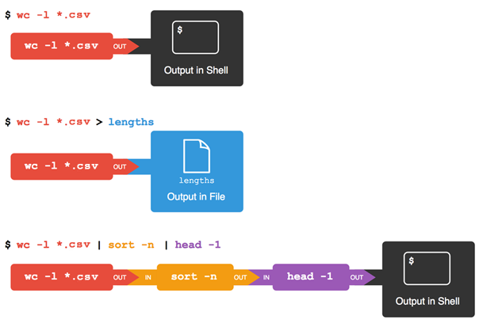

1.3 Wildcards, Pipes and Filters
Last updated on 2026-07-27 | Edit this page
Estimated time: 35 minutes
Overview
Questions
- How can I combine existing commands to do new things?
Objectives
- Capture a command’s output in a file using redirection.
- Use redirection to have a command use a file’s contents instead of keyboard input.
- Add commands together in a sequence using pipes, so output of one command becomes input of another.
- Explain what usually happens if a program or pipeline isn’t given any input to process.
- Explain Unix’s ‘small pieces, loosely joined’ philosophy.
Now that we know a few basic commands, we can finally look at the shell’s most powerful feature: the ease with which it lets us combine existing programs in new ways. One way we can use programs together is to have the output of one command captured in a file, and use that file as the input to another command. There are different approaches to achieve this, and we’re going to explain two of them while tackling a common challenge: finding the file with the fewest lines in a directory.
Combining Commands: File Operations with Wildcards
We’ll start with a directory called data, which is in
the shell-novice/data directory, one directory up from
test_directory. i.e. from test_directory:
Doing ls shows us three files in this directory:
OUTPUT
sc_climate_data_1000.csv sc_climate_data_10.csv sc_climate_data.csvThe data in these files is taken from a real climate science research project that is looking into woody biomass yields. The files are as follows:
- sc_climate_data.csv: the entire 20MB data set.
- sc_climate_data_1000.csv: a subset of the entire data, but only 1000 data rows.
- sc_climate_data_10.csv: a much smaller subset with only 10 rows of data.
We’ll largely be working on the 10-row version, since this allows us to more easily reason about the data in the file and the operations we’re performing on it.
Why not just use the entire 20MB data set?
Running various commands over a 20MB data set could take some time. It’s generally good practice when developing code, scripts, or just using shell commands, to use a representative subset of data that is manageable to start with, in order to make progress efficiently. Otherwise, we’ll be here all day! Once we’re confident our commands, code, scripts, etc. work the way we want, we can then test them on the entire data set.
The .csv extension indicates that these files are in
Comma Separated Value
format, a simple text format that specifies data in columns separated by
commas with lines in the file equating to rows.
Let’s run the command wc *.csv:
-
wcis the “word count” command, it counts the number of lines, words, and characters in files. - The
*in*.csvmatches zero or more characters, so the shell turns*.csvinto a complete list of.csvfiles:
OUTPUT
1048576 1048577 21005037 sc_climate_data.csv
11 12 487 sc_climate_data_10.csv
1001 1002 42301 sc_climate_data_1000.csv
1049588 1049591 21047825 totalFor the challenge at hand—finding the file with the fewest lines—we
often need to pass multiple filenames to a single command or work with
filenames that match a given pattern. This is where
wildcards come into play. There are various ways to use
wildcards, and for now, we’ll focus on two standard wildcards:
* (asterisk) and ? (question mark) that are
commonly used with the shell for pattern matching.
*is a standard wildcard that matches zero or more characters, so*.csvmatchessc_climate_data.csv,sc_climate_data_10.csv, and so on. On the other hand,sc_climate_data_*.csvonly matchessc_climate_data_10.csvandsc_climate_data_1000.csv, because thesc_climate_data_at the front only matches those two files.?is also a standard wildcard, but it only matches a single character. This means thats?.csvmatchessi.csvors5.csv, but notsc_climate_data.csv, for example. We can use any number of wildcards at a time: for example,p*.p?*matches anything that starts with apand ends with.p, and is followed by at least one more character (since the?has to match one character, and the final*can match any number of characters). Thus,p*.p?*would matchpreferred.practice, and evenp.pi(since the first*can match no characters at all), but notquality.practice(doesn’t start withp) orpreferred.p(there isn’t at least one character after the.p).
When the shell sees a wildcard, it expands the wildcard to create a
list of matching filenames before running the command that was
asked for. As an exception, if a wildcard expression does not match any
file, Bash will pass the expression as a parameter to the command as it
is. For example typing ls *.pdf in the data directory
(which contains only files with names ending with .csv)
results in an error message that there is no file called
*.pdf. However, generally commands like wc and
ls see the lists of file names matching these expressions,
but not the wildcards themselves. It’s the shell, not the other
programs, that expands the wildcards.
It’s important to note that there are more standard wildcards and advanced pattern-matching techniques known as regular expressions that we will introduce in the following episodes.
Going back to wc, if we run wc -l instead
of just wc, the output shows only the number of lines per
file:
OUTPUT
1048576 sc_climate_data.csv
11 sc_climate_data_10.csv
1001 sc_climate_data_1000.csv
1049588 totalWe can also use -w to get only the number of words, or
-c to get only the number of characters.
Our task is to find the fewest line file in this directory and of course it’s an easy question to answer when there are only three files, but what if there were 6000? Our first step toward a solution is to run the command:
The greater than symbol, >, tells the shell to
redirect the command’s output to a file instead of
printing it to the screen. The shell will create the file if it doesn’t
exist, or overwrite the contents of that file if it does. This is why
there is no screen output: everything that wc would have
printed has gone into the file lengths.txt instead.
ls lengths.txt confirms that the file exists:
OUTPUT
lengths.txtWe can now send the content of lengths.txt to the screen
using cat lengths.txt. cat is able to print
the contents of files one after another. There’s only one file in this
case, so cat just shows us what it contains:
OUTPUT
1048576 sc_climate_data.csv
11 sc_climate_data_10.csv
1001 sc_climate_data_1000.csv
1049588 totalNow let’s use the sort command to sort its contents. We
will also use the -n flag to specify that the sort is numerical instead
of alphabetical. This does not change the
file; instead, it sends the sorted result to the screen:
OUTPUT
11 sc_climate_data_10.csv
1001 sc_climate_data_1000.csv
1048576 sc_climate_data.csv
1049588 totalWe can put the sorted list of lines in another temporary file called
sorted-lengths.txt by putting
> sorted-lengths.txt after the command, just as we used
> lengths.txt to put the output of wc into
lengths.txt.
Once we’ve done that, we can run another command called
head to get the first few lines in
sorted-lengths.txt:
OUTPUT
11 sc_climate_data_10.csvUsing the parameter -1 with head tells it
that we only want the first line of the file; -20 would get
the first 20, and so on. Since sorted-lengths.txt contains
the lengths of our files ordered from least to greatest, the output of
head must be the file with the fewest lines.
Heads or Tails?
Just as head shows the top lines of a file,
tail reveals the bottom lines. To see tail in
action, run the following command:
By default, both head and tail commands
display the first 10 lines of a file. This gives us a quick preview of
the file’s content without overwhelming us with too much information.
However, as with many things in the shell, there’s room for
customisation.
If you want to tailor the number of lines displayed, you can use the
-n flag. This flag is followed by the count of lines you
want to see. For instance:
This command would show the last 5 lines of the file instead of the default 10.
OUTPUT
420196.8188,337890.0521,50.94,69.13,0.69
473196.8188,337890.0521,51.21,68.61,0.61
469196.8188,336890.0521,51.21,69.64,0.61
600196.8188,336890.0521,52.18,67.69,0.73
653196.8188,336890.0521,53.46,64.35,0.66Notably, you can achieve the same results by omitting the space after
-n and directly specifying the number, like we’ve seen
previously with head:
If you think this is confusing, you’re in good company: even once you
understand what wc, sort, and
head do, all those intermediate files make it hard to
follow what’s going on. Fortunately, there’s a way to make this much
simpler.
Using pipes to join commands together
We can make it easier to understand by running sort and
head together:
OUTPUT
11 sc_climate_data_10.csvThe vertical bar between the two commands is called a pipe. It tells the shell that we want to use the output of the command on the left as the input to the command on the right. The computer might create a temporary file if it needs to, or copy data from one program to the other in memory, or something else entirely; we don’t have to know or care.
We can even use another pipe to send the output of wc
directly to sort, which then sends its output to
head:
OUTPUT
11 sc_climate_data_10.csvThis is exactly like a mathematician nesting functions like
log(3x) and saying “the log of three times x”. In our
case, the calculation is “head of sort of line count of
*.csv”.
This simple idea is why systems like Unix - and its successors like
Linux - have been so successful. Instead of creating enormous programs
that try to do many different things, Unix programmers focus on creating
lots of simple tools that each do one job well, and that work well with
each other. This programming model is called “pipes and filters”, and is
based on this “small pieces, loosely joined” philosophy. We’ve already
seen pipes; a filter is a program like wc
or sort that transforms a stream of input into a stream of
output. Almost all of the standard Unix tools can work this way: unless
told to do otherwise, they read from standard input, do something with
what they’ve read, and write to standard output.
The key is that any program that reads lines of text from standard input and writes lines of text to standard output can be combined with every other program that behaves this way as well. You can and should write your programs this way so that you and other people can put those programs into pipes to multiply their power.
Redirecting Input
As well as using > to redirect a program’s output, we
can use < to redirect its input, i.e., to read from a
file instead of from standard input. For example, instead of writing
wc sc_climate_data_10.csv, we could write
wc < sc_climate_data_10.csv. In the first case,
wc gets a command line parameter telling it what file to
open. In the second, wc doesn’t have any command line
parameters, so it reads from standard input, but we have told the shell
to send the contents of sc_climate_data_10.csv to
wc’s standard input.
If you’re interested in how pipes work in more technical detail, see the description after the exercises.
Exercises
Challenge 1: What does sort -n
do?
Normally, sort goes character-by-character, sorting in
alphabetical order. Just looking at the first character of each
line, 6 is greater than both 1 and
2 so it goes to the end of the file.
However, if we pass sort the -n flag, it
sorts in numeric order - so if it encounters a character that’s
a number, it reads the line up until it hits a non-numeric character. In
this case, 22 is greater than 6 (and
everything else), so it goes to the end of the file.
If there isn’t a file already there with the name
testfile01.txt, both > and
>> will create one.
However, if there is a file, then > will
overwrite the contents of the file, whilst
>> will append to the existing contents.
Challenge 3: Piping commands together
In our current directory, we want to find the 3 files which have the least number of lines. Which command listed below would work?
wc -l * > sort -n > head -3wc -l * | sort -n | head 1-3wc -l * | head -3 | sort -nwc -l * | sort -n | head -3
The correct answer is 4. wc -l * will
list the length of all files in the current directory. Piping the output
to sort -n takes the list of files, and sorts it in numeric
order. Then, because the list will be sorted from lowest to highest,
head -3 will take the top 3 lines of the list, which will
be the shortest 3.
1 has the correct commands, but incorrectly tries to
use > to chain them together. > is used
to send the output of a command to a file, not to
another command.
Challenge 4: Why does uniq only
remove adjacent duplicates?
The command uniq removes adjacent duplicated lines from
its input. For example, if a file salmon.txt contains:
OUTPUT
coho
coho
steelhead
coho
steelhead
steelheadthen uniq salmon.txt produces:
OUTPUT
coho
steelhead
coho
steelheadWhy do you think uniq only removes adjacent
duplicated lines? (Hint: think about very large data sets.) What other
command could you combine with it in a pipe to remove all duplicated
lines?
uniq doesn’t search through entire files for matches, as
in the shell we can be working with files that are 100s of MB or even
tens of GB in size, with hundreds, thousands or even more unique values.
The more lines there are, likely the more unique values there are, and
each line has to be compared to each unique value. The time taken would
scale more or less with the square of the size of the file!
Whilst there are ways to do that kind of comparison efficiently,
implementing them would require making uniq a much larger
and more complicated program - so, following the Unix philosophy of
small, simple programs that chain together, uniq is kept
small and the work required is offloaded to another, specialist
program.
In this case, sort | uniq would work.
Challenge 5: Pipe reading comprehension
A file called animals.txt contains the following
data:
OUTPUT
2012-11-05,deer
2012-11-05,rabbit
2012-11-05,raccoon
2012-11-06,rabbit
2012-11-06,deer
2012-11-06,fox
2012-11-07,rabbit
2012-11-07,bearWhat text passes through each of the pipes and the final redirect in the pipeline below?
cat animals.txtoutputs the full contents of the file.-
head -5takes the full contents of the file, and outputs the top 5 lines:OUTPUT
2012-11-05,deer 2012-11-05,rabbit 2012-11-05,raccoon 2012-11-06,rabbit 2012-11-06,deer -
tail -3takes the output fromhead, and outputs the last 3 lines of that:OUTPUT
2012-11-05,raccoon 2012-11-06,rabbit 2012-11-06,deer -
sort -rtakes the output fromtailand sorts it in reverse order. This bit is a little trickier - whilst it puts the06lines above the05ones (because of reverse numerical order), it will put06, rabbitabove06, deeras it’s reverse alphabetical order - so the output isn’t just a reversed version of the output oftail!OUTPUT
2012-11-06,rabbit 2012-11-06,deer 2012-11-05,raccoon Finally,
> final.txtsends the output to a file calledfinal.txt.
Find all files (in this directory and all subdirectories) that have a
filename that ends in .dat, count the number of files
found, and sort the result. Note that the sort here is
unnecessary, since it is only sorting one number.
For those interested in the technical details of how pipes work:
What’s happening ‘under the hood’ - pipes in more detail
Here’s what actually happens behind the scenes when we create a pipe. When a computer runs a program — any program — it creates a process in memory to hold the program’s software and its current state. Every process has an input channel called standard input. (By this point, you may be surprised that the name is so memorable, but don’t worry: most Unix programmers call it “stdin”). Every process also has a default output channel called standard output (or “stdout”).
The shell is actually just another program. Under normal circumstances, whatever we type on the keyboard is sent to the shell on its standard input, and whatever it produces on standard output is displayed on our screen. When we tell the shell to run a program, it creates a new process and temporarily sends whatever we type on our keyboard to that process’s standard input, and whatever the process sends to standard output to the screen.
Here’s what happens when we run
wc -l *.csv > lengths.txt. The shell starts by telling
the computer to create a new process to run the wc program.
Since we’ve provided some filenames as parameters, wc reads
from them instead of from standard input. And since we’ve used
> to redirect output to a file, the shell connects the
process’s standard output to that file.
If we run wc -l *.csv | sort -n instead, the shell
creates two processes (one for each process in the pipe) so that
wc and sort run simultaneously. The standard
output of wc is fed directly to the standard input of
sort; since there’s no redirection with >,
sort’s output goes to the screen. And if we run
wc -l *.csv | sort -n | head -1, we get three processes
with data flowing from the files, through wc to
sort, and from sort through head
to the screen.

-
wccounts lines, words, and characters in its inputs. -
*matches zero or more characters in a filename, so*.txtmatches all files ending in.txt. -
?matches any single character in a filename, so?.txtmatchesa.txtbut notany.txt. -
catdisplays the contents of its inputs. -
sortsorts its inputs. -
headdisplays the first 10 lines of its input. -
taildisplays the last 10 lines of its input. -
command > [file]redirects a command’s output to a file (overwriting any existing content). -
command >> [file]appends a command’s output to a file. -
[first] | [second]is a pipeline: the output of the first command is used as the input to the second. - The best way to use the shell is to use pipes to combine simple single-purpose programs (filters).